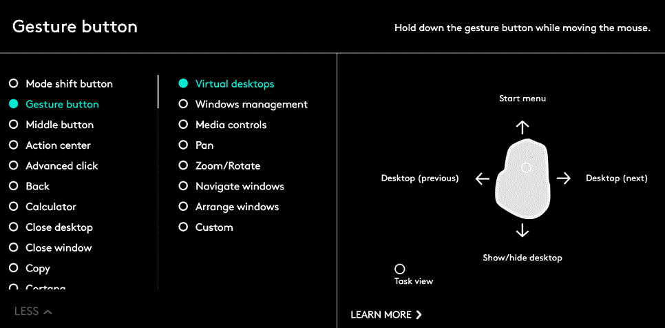

Gesti
I gesti consentono di interagire con il sistema operativo e le applicazione in modo semplice e intuitivo.
Utilizzare i gesti per ingrandire documenti, sfogliare pagine Web, ruotare immagini e molto altro ancora.
Logitech Options consente di accedere a una serie di gesti che è possibile eseguire con il mouse MX Master.
Attivazione dei set di gesti
Aprire la scheda Mouse e fare clic sul pulsante gesti evidenziato.
Quando il pulsante gesti viene selezionato nell’elenco delle azioni dei pulsanti, i set di gesti vengono visualizzati sulla destra insieme alla corrispondente guida visiva.

Un set selezionato rimane attivo fino a quando si seleziona un altro set.
Nota: i gesti non sono disponibili se la rispettiva azione non è assegnata. È inoltre possibile assegnare il pulsante gesti al pulsante azionabile con il pollice, il pulsante centrale e il pulsante per il cambio di modalità.
Esecuzione dei gesti
Per eseguire un gesto, tenere premuto il pulsante gesti e muovere il mouse verso sinistra, destra, l’alto o il basso.
Facendo clic sul pulsante gesti viene eseguita un’azione relativa ai gesti attivi.

Per ulteriori informazioni vedere la Guida completa di MX Master.